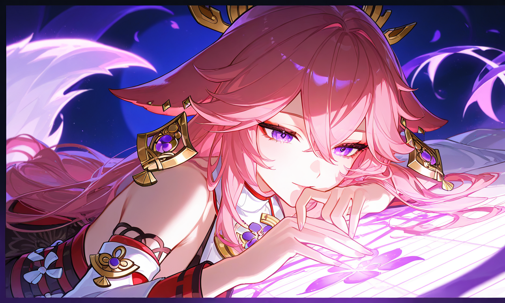
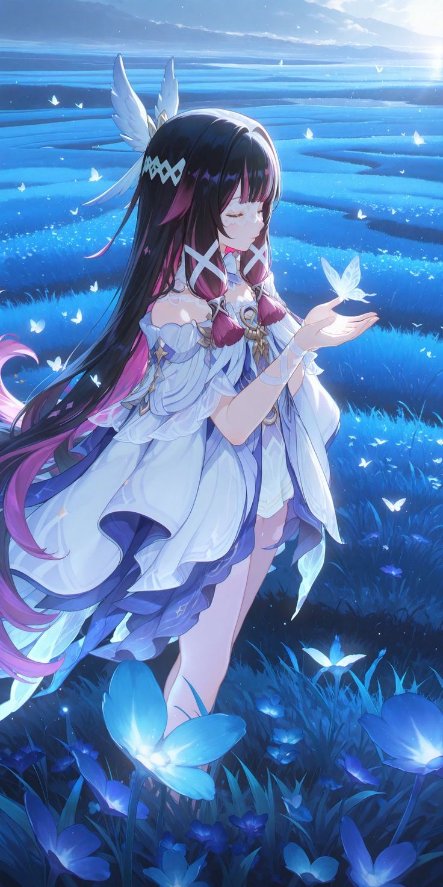

ABOUT ME

21st April,2026 | 5 Comments
Hi, I’m Rahul. I share ideas about minimalism, productivity, and living a meaningful life.
YAE MIKO

20st April,2026 | 5 Comments
Yae Miko is a graceful and intelligent character from Genshin Impact. She serves as the chief priestess of the Grand Narukami Shrine in Inazuma and is closely connected to the Electro Archon, Raiden Shogun. Yae Miko is known for her playful, teasing personality and sharp wit, often speaking in a mysterious and clever way. In gameplay, she is an Electro catalyst user who specializes in dealing continuous damage through her fox-shaped totems. Her abilities make her effective in reaction-based teams, and her elegance and charm make her a fan favorite among players worldwide.
COLUMBINA

20st April,2026 | 5 Comments
Yae Miko is a graceful and intelligent character from Genshin Impact. She serves as the chief priestess of the Grand Narukami Shrine in Inazuma and is closely connected to the Electro Archon, Raiden Shogun. Yae Miko is known for her playful, teasing personality and sharp wit, often speaking in a mysterious and clever way. In gameplay, she is an Electro catalyst user who specializes in dealing continuous damage through her fox-shaped totems. Her abilities make her effective in reaction-based teams, and her elegance and charm make her a fan favorite among players worldwide.